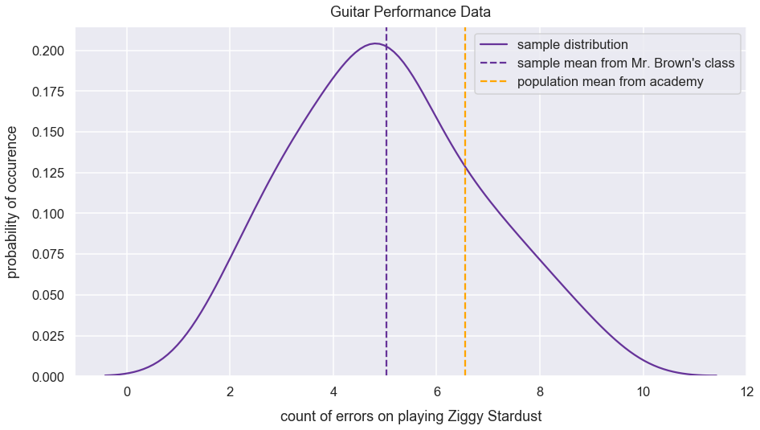
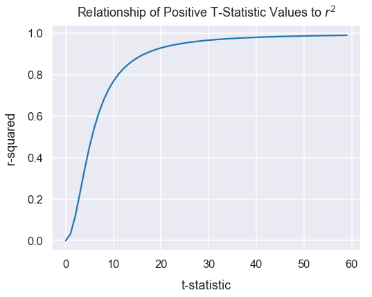

Measures of Effect Size for t-tests
- February 21, 2019 • 7 min read
- Key Terms: t-tests, python, scipy, numpy
Measures of Effect Size
"Effect size is a quantitative measure of the magnitude of a phenomenom" - via the official Wikipedia post. They are typically used to complement results from statistical hypothesis tests. In experiment design, I wouldn't make conclusive actions based solely on an effect size measurement.
There are measures considered to be standardized and unstandardized.
Import Modules
import scipy.stats as stats
import numpy as np
import seaborn as sns
import matplotlib.pyplot as plt
% matplotlib inline
import warnings
Ignore warnings
warnings.filterwarnings('ignore')
Set Visualization Styles
sns.set_context('talk')
sns.set_style("darkgrid")
Standardized Measure: Difference in Means
This effect size measurement of difference in means is simply the difference in means of two groups! This measurement is applicable for one sample t-tests, dependent sample t-tests or independent sample t-tests.
Example: Guitar Performances
There's an academy that teaches students new to music how to play the guitar in just three months. At the end of the three months, students are assessed on their performance of the song Ziggy Stardust. For their performance, a proctor counts the number of errors performed by each student. There have been hundreds of instructors at this academy over the year and they all utilized the same methods for teaching. However, last year a new teacher, Mr. Brown, utilized a new method to teach a random group of 28 students in that 3 month period.
Each year, the academy updates their mean value for the number of errors on student's final performance. However, they don't record all the individual historical student scores for privacy purposes. Therefore, the population variance is unknown.
A calculation was also made for the mean number of errors by Mr. Brown's students. Does Mr. Brown's teaching significantly decrease the number of errors in student's performance compared to the population of students taught at the academy?
\(H_{o}: \mu_{\textrm{Mr. Brown}}>=\mu_{academy}\)
\(H_{a}: \mu_{\textrm{Mr. Brown}}<\mu_{academy}\)
sample_student_errors = [5, 5, 5, 5, 5, 5, 5, 4, 4, 4, 4, 4, 6, 6, 6, 6, 7, 7, 7, 3, 3, 3, 3, 2, 2, 8, 8, 9]
sample_mean = np.mean(sample_student_errors)
sample_standard_deviation = 1.82
population_mean = 6.56
difference_group_means = round(sample_mean - population_mean, 2)
difference_group_means
-1.52
It's tough to determine if this value of \(-1.52\) is considered small or large. Hypothetically, if the students sampled typically made \(30\) errors, then relatively a \(-1.52\) difference in means from another group seems small. However, the sample standard deviation is \(1.82\) so I think this difference in means of \(-1.52\) at a glance seems relatively large.
To combat this uncertainty of the calculation above, I can use the measure of Cohen's d
Cohen's d
Cohen's d is a measure to determine the standardized mean difference in groups. The measure is the difference in group means in terms of standard deviation units.
The equation is:
Cohen's D can be calculated for one-sample, dependent and independent sample t-tests.
Example: Continue Guitar Performances
The visualization below plots the distribution of the values in the sample, the sample mean and population mean.
plt.figure(figsize=(15, 8))
sns.distplot(sample_student_errors, hist=False, label='sample distribution', color='rebeccapurple')
plt.axvline(x=sample_mean, color='rebeccapurple', linestyle='--', label="sample mean from Mr. Brown's class")
plt.axvline(x=population_mean, color='orange', linestyle='--', label='population mean from academy')
plt.xlabel("count of errors on playing Ziggy Stardust", labelpad=14)
plt.ylabel("probability of occurence", labelpad=14)
plt.title("Guitar Performance Data", y=1.015)
plt.legend();

How many sample standard deviations are between the sample mean and population mean?
cohens_d = (sample_mean - population_mean)/sample_standard_deviation
cohens_d
-0.8375196232339088
There's a \(-0.83\) difference in means in terms of sample standard deviation units. Since this is negative, the sample mean must be smaller than the population mean.
Many Examples: Interpretation of Cohen's D Sizes
For examples below, I assume dependent t-tests and calculate the standard deviation of the sampling distribution that would be the differences in means of the two groups.
The larger the Cohen's d value, the further sample means are from one another in standard deviation units.
Here is a simplified interpretation of effect sizes of Cohen's d values:
| Cohen's d range | Interpretation |
|---|---|
| [0, 0.1) | very small effect size |
| [0.1 - 0.35) | small effect size |
| [0.35 -0.65) | medium effect size |
| [0.65 - 0.9) | large effect size |
| 0.9+ | very large effect size |
Below are three functions to help in visualizing various Cohen's d values. I wouldn't get bogged down in the details of these functions. It's more important to focus on the visualizations below.
def interpret_cohens_d(cohens_d):
"""
Determines text interpretation of effect size given Cohen's d value
:param cohens_d: float of Cohen's d value
:returns: effect_size_interpretation: adjective to describe magnitude of effect size
"""
if 0<=cohens_d<0.1:
effect_size_interpretation = "Very Small"
elif 0.1<=cohens_d<0.35:
effect_size_interpretation = "Small"
elif 0.35<=cohens_d<0.65:
effect_size_interpretation = "Medium"
elif 0.65<=cohens_d<0.9:
effect_size_interpretation = "Large"
elif cohens_d >= 0.9:
effect_size_interpretation = "Very Large"
return effect_size_interpretation
def two_sample_data_setup_for_cohens_d(mean_1, mean_2, sample_std_dev_1, sample_std_dev_2):
"""
Creates two normal distributions of data values.
Calculates differences in values and standard deviation of list of differences.
Calculates Cohen's D - equation used in dependent t-tests
:param mean_1: mean of group one
:param mean_2: mean of group two
:param sample_std_dev_1: sample standard deviation of group one
:param sample_std_dev_2: sample standard deviation of group two
:returns: values_1, values_2, cohens_d: values for group one, values for group two, Cohen's d
"""
values_1 = np.random.normal(loc=mean_1, scale=sample_std_dev_1, size=3000)
values_2 = np.random.normal(loc=mean_2, scale=sample_std_dev_2, size=3000)
differences_group_values = np.subtract(values_1, values_2)
std_dev_differences_group_values = np.std(differences_group_values, ddof=1)
cohens_d = round(abs((mean_1 - mean_2)/std_dev_differences_group_values), 2)
return values_1, values_2, cohens_d
def visualize_distributions(values_1, values_2, cohens_d, cohens_d_interpretation):
"""
Plots KDE plots of values from values_1 and values_2.
Inserts Cohen's d value and interpretation in title
:param values_1: values in group one
:param values_2: values in group two
:param cohens_d: Cohen's d value
:param cohens_d_interpretation: text to describe magnitude of effect size
:returns: plot figure
"""
plt.figure(figsize=(10, 8))
sns.distplot(values_1, hist=False)
sns.distplot(values_2, hist=False)
plt.xlabel("value", labelpad=13)
plt.ylabel("frequency", labelpad=13)
plt.title("Distribution of Two Groups with {0} Cohen's d of {1}".format(cohens_d_interpretation, cohens_d), y=1.015, fontsize=22);
Let's visualize Cohen's d values.
Below shows the visualization of two distributions of samples with close means and small standard deviation values. This results in a small Cohen's d value.
two_groups_close_means_small_std_dev = two_sample_data_setup_for_cohens_d(0, 1.2, 3, 3)
values_1 = two_groups_close_means_small_std_dev[0]
values_2 = two_groups_close_means_small_std_dev[1]
cohens_d = two_groups_close_means_small_std_dev[2]
cohens_d_interpretation = interpret_cohens_d(cohens_d)
visualize_distributions(values_1, values_2, cohens_d, cohens_d_interpretation)

Below is the data creation and visualization for two samples with faraway means (\(5\) units) and small standard deviation values. This results in a very large Cohen's d value.
two_groups_far_away_means_small_std_dev = two_sample_data_setup_for_cohens_d(0, 5, 3, 3)
values_1 = two_groups_far_away_means_small_std_dev[0]
values_2 = two_groups_far_away_means_small_std_dev[1]
cohens_d = two_groups_far_away_means_small_std_dev[2]
cohens_d_interpretation = interpret_cohens_d(cohens_d)
visualize_distributions(values_1, values_2, cohens_d, cohens_d_interpretation)

Below, the means of each group seem close to one another at just \(1.2\) units away. However, the standard deviation of each group is very small. Therefore, the resulting Cohen's d values is "very large" because the standardized difference in means are very far from one another.
two_groups_far_away_means_very_small_std_dev = two_sample_data_setup_for_cohens_d(0, 1.2, 0.6, 0.6)
values_1 = two_groups_far_away_means_very_small_std_dev[0]
values_2 = two_groups_far_away_means_very_small_std_dev[1]
cohens_d = two_groups_far_away_means_very_small_std_dev[2]
cohens_d_interpretation = interpret_cohens_d(cohens_d)
visualize_distributions(values_1, values_2, cohens_d, cohens_d_interpretation)

Coefficient of Determination - \(r^2\)
Another effect size measure, \(r^2\), is a measure of the proportion of variance between two variables.
The greater the magnitude of the t-statistic, the greater the evidence to reject the null hypothesis. In a very large t-statistic (such as \(20\)) or very small t-statistic (such as \(-20\)), there's likely a large variation in values between the two groups.
\(r^2\) values can be on the range from \(0\) to \(1\). An \(r^2\) of \(0\) means the variables are not at all related. An \(r^2\) of 1 means the variables are perfectly related.
For any given \(n\), a greater in magnitude of a t-statistic, the larger the \(r^2\).
Let's visualize this relationship between the t-statistic and \(r^2\)
def calculate_r_squared(t_statistic, degrees_of_freedom):
r_squared = t_statistic**2 / (t_statistic**2 + degrees_of_freedom)
return r_squared
df = 30
r_squared_values = []
t_statistic_values = list(range(0, 60, 1))
for t_statistic in t_statistic_values:
r_squared = calculate_r_squared(t_statistic, df)
r_squared_values.append(r_squared)
plt.figure(figsize=(8, 6))
plt.plot(t_statistic_values, r_squared_values)
plt.xlabel("t-statistic", labelpad=14)
plt.ylabel("r-squared", labelpad=14)
plt.title("Relationship of Positive T-Statistic Values to $r^2$ for $df=30$", y=1.015);

For any given t-statistic value, a smaller \(n\) results in a larger \(r^2\).
Let's visualize this too.
def calculate_r_squared(t_statistic, degrees_of_freedom):
r_squared = t_statistic**2 / (t_statistic**2 + degrees_of_freedom)
return r_squared
t_statistic = 4
r_squared_values = []
df_values = list(range(0, 60, 1))
for df in df_values:
r_squared = calculate_r_squared(t_statistic, df)
r_squared_values.append(r_squared)
plt.figure(figsize=(8, 6))
plt.plot(df_values, r_squared_values)
plt.xlabel("degrees of freedom", labelpad=14)
plt.ylabel("r-squared", labelpad=14)
plt.title("Relationship of Degrees of Freedom and $r^2$", y=1.015);

Example: Continue Guitar Performances
Given the example above, let's continue with the analysis needed to
Assign the variable n to be the size of the sample.
n = len(sample_student_errors)
n
28
Let's assign the variable degrees_of_freedom to be the degrees of freedom for students in Mr. Brown's class.
degrees_of_freedom = n-1
degrees_of_freedom
27
In the Python Scipy package, there's a method called ttest_1samp() that calculates the t-statistic and p-value for a one sample two-sided t-test. However, the guitar errors example is a one-sided negative direction test. Let's use the returned p-value from this method and multiply it by \(2\) to get the p-value for a one-sided test.
results = stats.ttest_1samp(a=sample_student_errors, popmean=population_mean)
results
Ttest_1sampResult(statistic=-4.443441113387382, pvalue=0.00013578924891219084)
t_statistic = results[0]
t_statistic
-4.443441113387382
Calculate \(r^2\)
r_squared = round(t_statistic**2 / (t_statistic**2 + degrees_of_freedom), 2)
r_squared
0.42
There is some amount of variation between between the errors from students of Mr. Brown and the population of the academy.